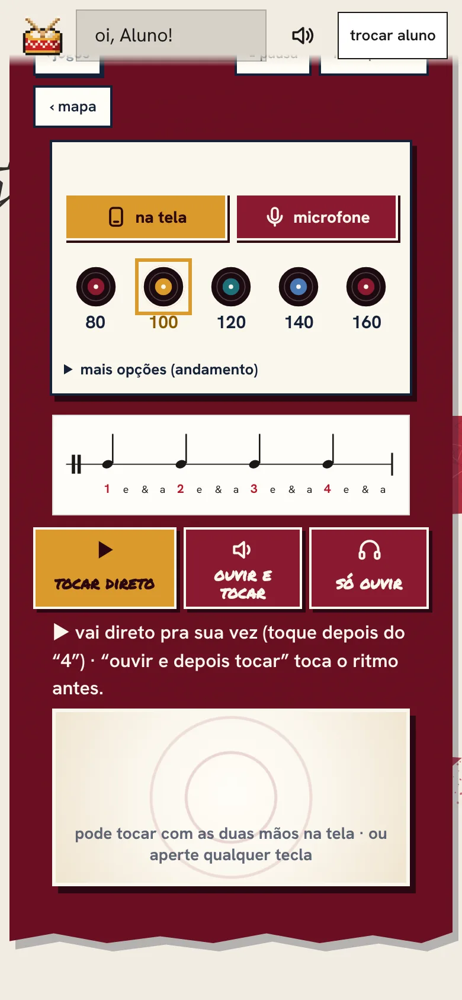
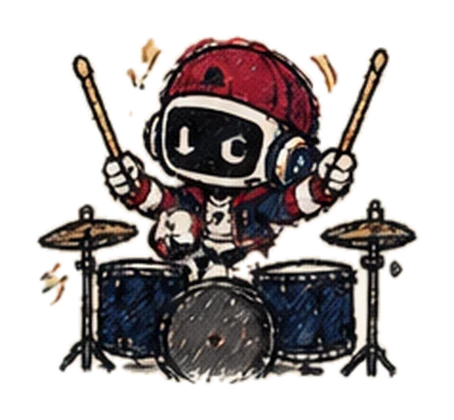
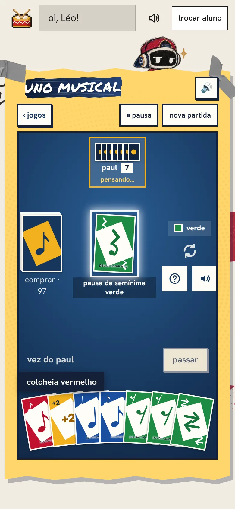
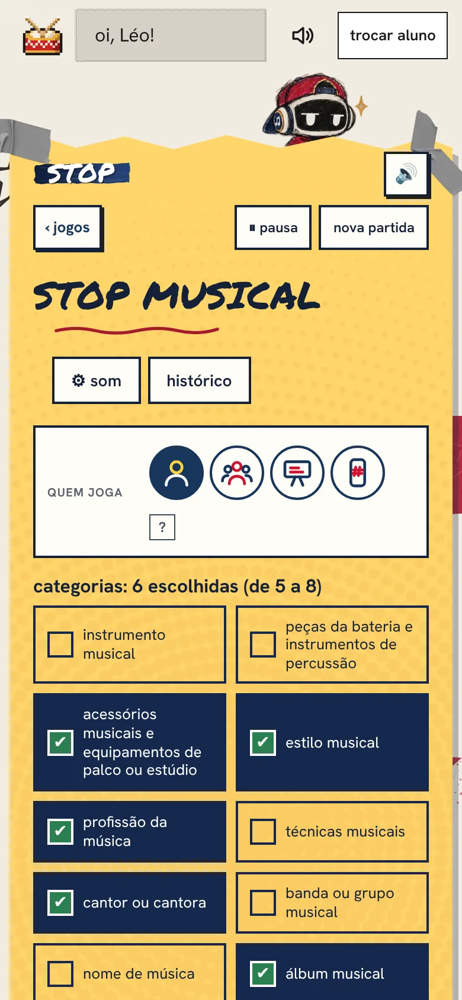
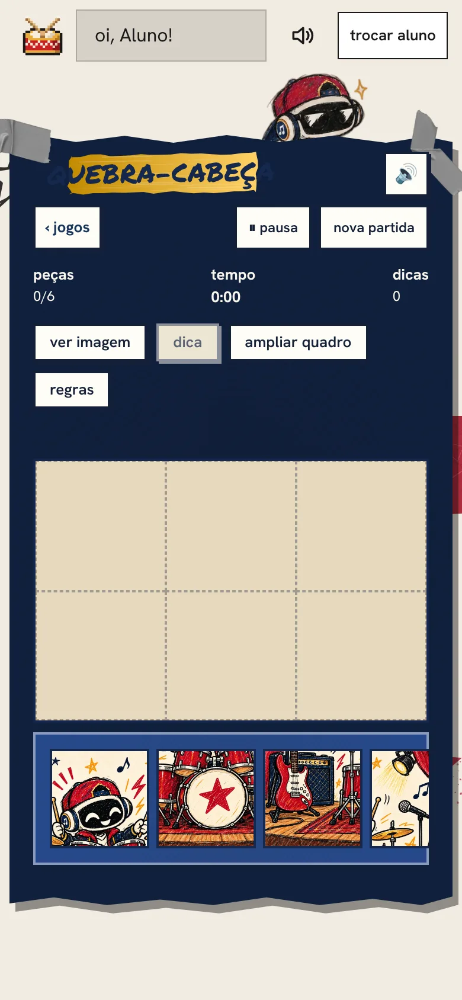
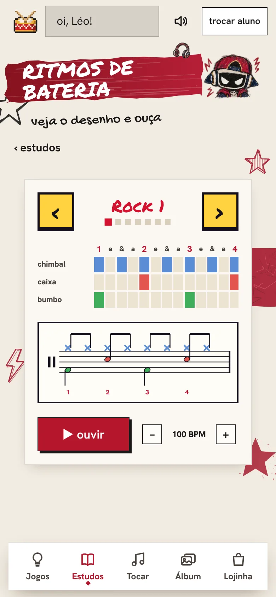
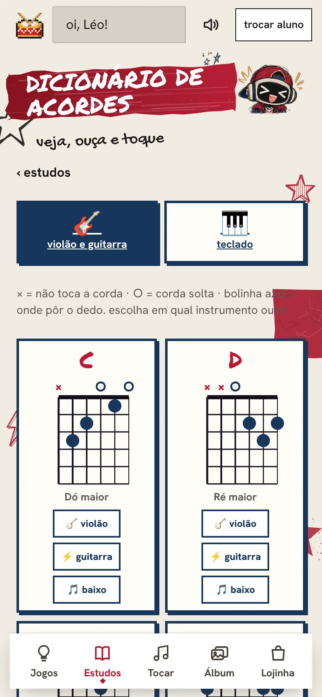
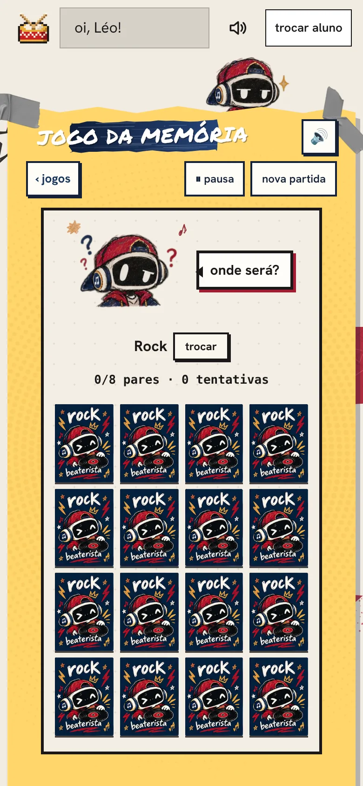
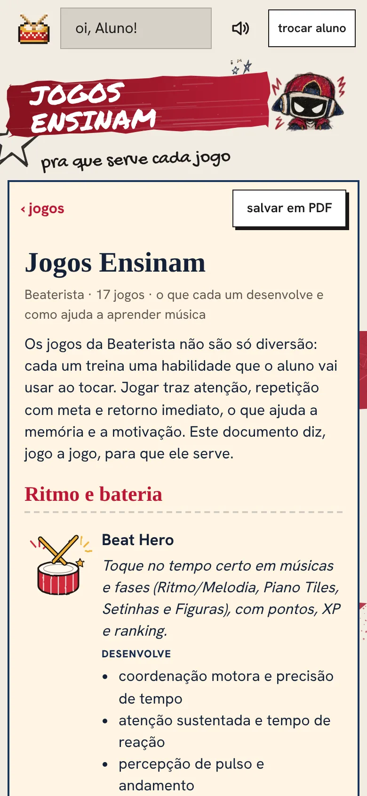
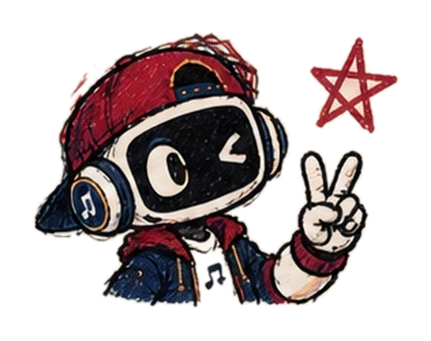

Beat Hero
toque no tempo certo e ganhe XP, com músicas de vários estilos.
coordenaçãoprecisão de temporitmo, leitura de partitura e teoria brincando, no celular, tablet ou computador. criado pela professora Bea, de bateria, junto com o Paul, o robô que explica tudo.
sem instalar nada · abre direto no navegador

aqui cada jogo treina uma habilidade de verdade. a criança (ou o adulto!) toca, lê, ouve e erra sem medo, porque o Paul mostra o caminho e o jogo deixa tentar de novo.
tocar no tempo, ler figuras rítmicas, ouvir e montar ritmos. do pulso ao groove.
pauta da bateria, clave de sol e de fá em mundos cheios de fases, passo a passo.
dicionário, acordes, ritmos e aulinhas curtas. cada coisa nova vira jogo.
telas reais do app. cada jogo diz o que desenvolve.
toque no tempo certo e ganhe XP, com músicas de vários estilos.
coordenaçãoprecisão de tempoleia a figura na pauta e toque no pulso, na tela ou no microfone, em mundos com fases.
leitura rítmicapulso
ouça o ritmo e monte com as cartas. a dificuldade sobe a cada fase.
escutamemória rítmica
62 fases pra dominar semínima, colcheia, pausas e muito mais.
valor das figurasraciocínio
aprenda a ler a pauta da bateria e as claves de sol e de fá.
partituraclaves
jogue a carta da mesma cor ou figura rítmica. contra o Paul ou com amigos.
figurasestratégia
a letra é sorteada e você escreve rápido em 12 categorias de música.
vocabuláriocultura musical
monte o palco, a guitarra, o estúdio e outras cenas musicais.
focopercepção
veja o desenho do ritmo, a partitura e ouça: rock, pop, samba, baião.
levadasescuta ativa
16 acordes de violão e guitarra: veja onde pôr o dedo e ouça.
harmoniamapa do braço
bateria, violão, piano e xilofone na tela. grave seu ritmo e brinque.
criatividadecoordenação
instrumentos, figuras, bandas e profissões da música.
memóriavocabuláriojogos.beaterista.com.br no celular, tablet ou computador. dá pra colocar o ícone na tela inicial.
alguns jogos já abrem livres pra testar. o Paul explica, o jogo dá a resposta na hora.
com o código de aluno você desbloqueia as fases, ganha estrelas, giros da roleta e figurinhas do álbum.
o método junta o que a pesquisa sobre aprendizagem vem mostrando há anos. sem promessa mágica: prática curta, frequente e com retorno na hora.
sabe aquela hora de tela? aqui ela tem objetivo. cada jogo tem uma folha dizendo o que a criança faz e o que desenvolve.

digitais: estude na tela do celular ou do computador, ou imprima para treinar no papel.
 black friday · metade do preçoBateria Start44 páginas · peças, figuras, partitura e rudimentos
black friday · metade do preçoBateria Start44 páginas · peças, figuras, partitura e rudimentosnão. abre direto no navegador. se quiser, dá pra adicionar o ícone na tela inicial do celular ou tablet.
a escola Beaterista ensina crianças e adultos, e os jogos servem pros dois. o Paul explica de um jeito leve, sem faixa de idade.
não. tem jogos pra quem nunca tocou e fases que sobem de nível aos poucos.
não. dá pra tocar na tela. alguns jogos aceitam o microfone se você tiver instrumento, mas não é obrigatório.
é o que libera as fases, as estrelas, a roleta e o álbum de figurinhas. você pode testar os jogos livres antes e pedir o código para a professora Bea.
a compra é pela Hotmart e o acesso ao PDF chega por lá, na hora do pagamento confirmado.
depois de aberto uma vez, boa parte funciona offline. algumas coisas (códigos, jogos em 2 celulares) precisam de internet.

teste os jogos agora, sem compromisso. quando gostar, é só pedir o seu código.
 Bateria Kids36 páginas · aprenda brincando e colorindo
Bateria Kids36 páginas · aprenda brincando e colorindo Beaterista Mood55 páginas · exercícios que a Bea estuda e leva pro palco
Beaterista Mood55 páginas · exercícios que a Bea estuda e leva pro palco